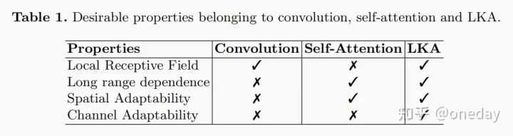

本文是论文《Visual Attention Network》的学习笔记
我在该模型上执行一个分类任务，发现该模型的效果要优于我实验的其他模型（包括resnet50、densenet121、efficientNet-b0、swin-tiny）
所以在此记录一下，笔记大多是抄的，出处在Refs上表明，如有侵权请联系我。
基础
自注意力机制
Attention注意力机制与self-attention自注意力机制
空间相关性和通道相关性1
从维度的角度看，卷积核可以看成是一个空间维(宽和高)和通道维的组合，而卷积操作则可以视为空间相关性和通道相关性的联合映射。从inception的1x1卷积来看，卷积中的空间相关性和通道相关性是可以解耦的，将它们分开进行映射，可能会达到更好的效果。
深度可分离卷积是在1x1卷积基础上的一种创新。主要包括两个部分：深度卷积和1x1卷积。深度卷积的目的在于对输入的每一个通道都单独使用一个卷积核对其进行卷积，也就是通道分离后再组合。1x1卷积的目的则在于加强深度。下面以一个例子来看一下深度可分离卷积。
假设我们用128个$3 \times3 \times3$的滤波器对一个 $7 \times7 \times3$的输入进行卷积，可得到$5 \times5 \times128$的输出,其计算量为$5 \times5 \times128 \times3 \times3 \times3=86400$。如下图所示：
现在看如何使用深度可分离卷积来实现同样的结果。深度可分离卷积的第一步是深度卷积。这里的深度卷积，就是分别用3个$3 \times3 \times1$的滤波器对输入的3个通道分别做卷积，也就是说要做3次卷积，每次卷积都有一个$5 \times5 \times1$的输出，组合在一起便是$5 \times5 \times3$的输出。现在为了拓展深度达到128，我们需要执行深度可分离卷积的第二步：1x1卷积。现在我们用128个$1 \times1 \times3$的滤波器对$5 \times5 \times3$进行卷积，就可以得到$5 \times5 \times128$的输出。完整过程如下图所示：
那么我们来看一下深度可分离卷积的计算量如何。第一步深度卷积的计算量：$5 \times5 \times1 \times3 \times3 \times1 \times3=675$。第二步1x1卷积的计算量：$5 \times5 \times128 \times1 \times1 \times3=9600$，合计计算量为10275次。可见，相同的卷积计算输出，深度可分离卷积要比常规卷积节省12倍的计算成本。
典型的应用深度可分离卷积的网络模型包括xception和mobilenet等。本质上而言，xception就是应用了深度可分离卷积的inception网络。
正文2
动机
图像的二维性质给在计算机视觉中应用自注意力带来了三个挑战：
- 将图像处理为一维序列，忽略了其二维结构。
- 二次复杂度对于高分辨率的图像来说太贵了。
- 它只捕捉了空间适应性，而忽略了通道适应性
在本文中，作者提出了一种新的大核注意(LKA)模块，以使自注意的自适应和长程相关，同时避免了上述问题。作者进一步介绍了一种基于LKA的新的神经网络，即视觉注意网络(VAN)。VAN虽然非常简单和高效，但在包括图像分类、目标检测、语义分割、实例分割等广泛的实验中，它以很大的优势优于最先进的transfomer和卷积神经网络。
方法
LCK
卷积神经网络(CNNs)利用局部上下文信息和平移不变性，大大提高了神经网络的效率。自AlexNet以来，cnn迅速成为计算机视觉的主要主流框架。为了进一步提高效率，研究人员投入了大量的精力，使cnn成为更深的和更轻的。作者的工作与MobileNet有相似之处，MobileNet将标准卷积解耦为两部分，即深度卷积和逐点卷积(也就是1×1Conv)。作者的方法将卷积分解为三个部分：深度卷积、深度空洞卷积和逐点卷积。得益于这种分解，作者的方法更适合于有效地分解大的核卷积。作者还在该方法中引入了注意机制来获得自适应特性。
彩色网格表示卷积核的位置，黄色网格表示中心点。从图中可以看出，13×13卷积分解为5×5深度卷积，5×5深度空洞卷积，膨胀速率3和1×1卷积
class AttentionModule(nn.Module): |
作者提出对大核卷积操作进行分解来捕获长程关系。大核卷积可分为三个部分：空间局部卷积（深度卷积）、空间远程卷积（深度空洞卷积）和通道卷积（1×1卷积）。所以，可以将K×K卷积分解为K/d×K/d的深度空洞卷积，(2d−1)×(2d−1)的深度卷积和1×1卷积。通过上述分解，可以用轻微的计算代价和参数来捕获长程关系。在得到长程关系后，可以估计一个点的重要性并生成注意力图。

作者提出的LKA结合了卷积和自注意力的优点。它考虑了局部上下文信息、大的感受野和动态过程。此外，LKA不仅实现了空间维度的自适应性，而且还实现了通道维度的自适应性。值得注意的是，在深度神经网络中，不同的通道往往代表不同的对象，而通道维度的适应性对视觉任务也很重要。
VAN
VAN具有简单的层次结构，即输出空间分辨率降低的四个阶段序列，分别为H/4×W/4、H/8×W/8、H/16×W/16和H/32×W/32。H和W是输入图像的高度和宽度。随着分辨率的降低，输出通道的数量也在不断增加。输出通道Ci的变化如下表所示。 首先对输入值进行下采样，并使用步幅数来控制下采样率。下采样后，一个stage中的所有层保持相同的输出大小，即空间分辨率和通道数量。然后，批量归一化、GELU激活函数、大核注意和卷积前馈网络依次堆叠，提取特征。最后，在每个阶段结束时应用一个层归一化。根据参数和计算成本，设计了 VAN-Tiny, VAN-Small, VAN-Base and VAN-Large四种结构。
对21×21卷积的不同方式参数的比较。X，Y和our分别提供了标准卷积，mobilenet]和van的分解。输入和输出具有相同大小的H×W×C
默认情况下，本文的LKA采用5×5深度卷积，7×7深度卷积与膨胀率为3的空洞卷积和1×1卷积来近似21×21卷积。在这种设置下，VAN可以有效地获取局部信息和长程联系。作者分别使用7×7和3×3步幅卷积进行4×和2×的降采样。
实验
作者在ImageNet-1K图像分类数据集、COCO目标检测数据集和ADE20K语义分割数据集上进行了定量实验。此外，作者通过在ImageNet验证集上使用Grad-CAM来可视化类激活映射(CAM)。
图像分类

VAN与其他mlp、cnn和ViTs的比较。VAN优于其他参数相似，计算成本相似的cnn(ResNet[29]，ResNeXt[90]，ConvNeXt[53]等)，ViTs(DeiT[74]、PVT[83]、Swin-Transformer[52]等)和MLPs(MLP-Mixer[72]，ResMLP[73]，gMLP[46]等)。作者在每个类别中选择了一个具有代表性的网络进行讨论。ConvNeXt[53]是一种特殊的CNN，它吸收了vit的一些优势，如大的感受野（7×7卷积）和先进的训练策略(300个epoch、数据增强等)。VAN和ConvNeXt[53]相比，VAN-base比CoNvNeXt-t多出0.7%(82.8%vs.82.1%)，因为VAN具有更大的感受域和自适应能力。Swin-Transformer是一种著名的ViT变体，采用局部注意力和移动窗口的方式。由于VAN对二维结构信息非常友好，具有较大的感受野，并在通道维度上实现了自适应性，VAN-Base超过Swin-T1.5%(82.8%vs.81.3%)。对于MLPs，选择gMLP[46]。VAN-Base超过gMLP-S[46]3.2%(82.8%vs.79.6%)。也可以看出，在小型模型上面VAN的表现更加出色。
目标检测
语义分割
消融实验
DW-D-Conv提供了深度空洞卷积，这在捕获LKA中的长程依赖性中发挥了作用。
DW-Conv可以利用图像的局部上下文信息。
注意力机制的引入可以看作是使网络实现了自适应特性。受益于此，VAN-Tiny实现了约1.1%（74.3%对75.4%）的改善。
1×1Conv捕获了通道维度中的关系。结合注意机制，引入了通道维度的自适应性。提高了0.8%(74.1%vs.75.4%)，证明了通道维度自适应性的必要性。
可视化
可视化结果。所有的图像都来自于ImageNet验证集中的不同类别。CAM采用VAN-Base模型和Grad-CAM产生。左：原始图像，右：类激活图
结果显示，VAN-Base可以清晰地聚焦于目标对象。因此，可视化直观地证明了VAN的有效性。
Refs
1. 深度学习知识系列(二) 各种卷积形式 ↩
2 . 【ARXIV2202】Visual Attention Network ↩